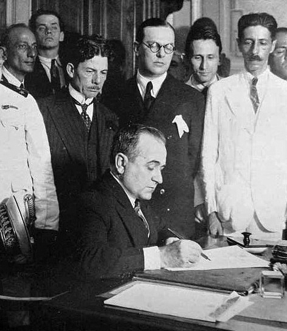
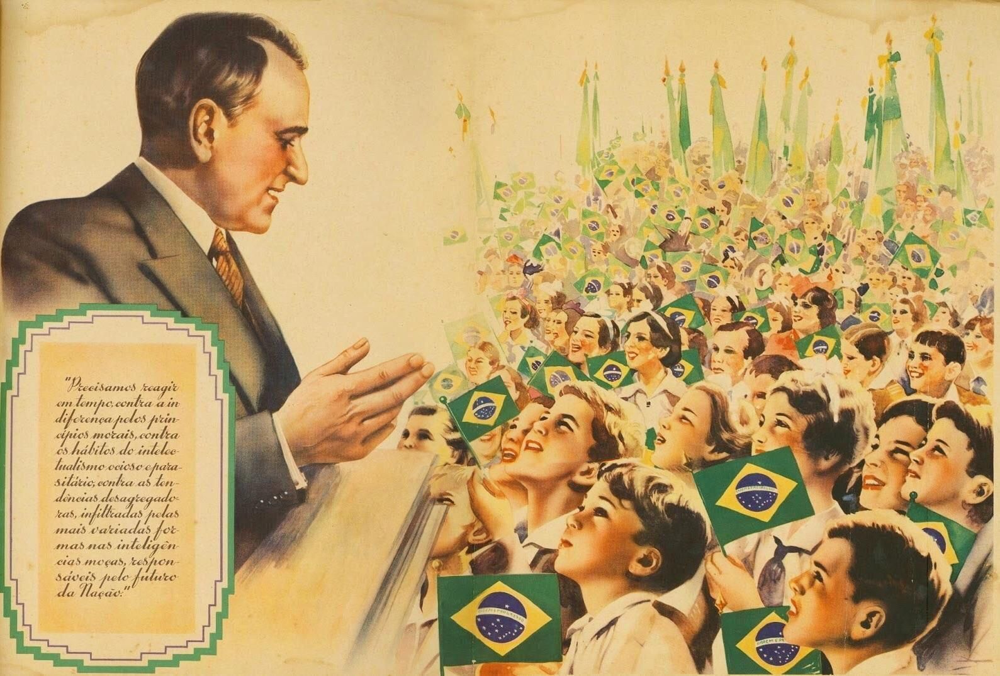
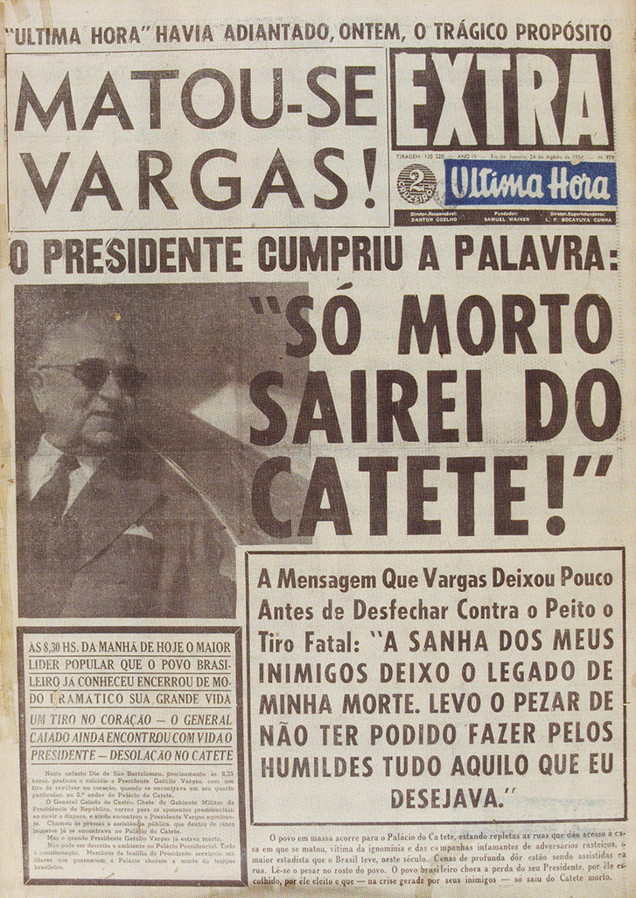

O Colapso do Café: o eco da Crise de 1929 e a Revolução de 1930

Para entender a ascensão de Getúlio Vargas ao poder, é impossível olhar apenas
para as fronteiras brasileiras. Durante toda a República Velha (1889-1930), o
Brasil funcionou como uma imensa fazenda agroexportadora dependente do mercado
internacional, dominada politicamente pelas oligarquias de São Paulo e Minas
Gerais (a política do "café com leite"). No entanto, quando a Bolsa de Valores
de Nova York quebrou em outubro de 1929, o mundo mergulhou na Grande Depressão.
Os Estados Unidos, principal comprador do nosso café, pararam de importar. O
preço do grão despencou, toneladas foram queimadas para evitar a desvalorização
total e a elite paulista perdeu a base econômica que sustentava sua hegemonia
política incontestável.
Foi essa fratura tectônica na economia global que abriu a janela de oportunidade
para a Revolução de 1930. O presidente Washington Luís rompeu o pacto
oligárquico ao indicar outro paulista, Júlio Prestes, para a sucessão, em vez
de um mineiro. Minas Gerais, Paraíba e Rio Grande do Sul uniram-se na Aliança
Liberal, lançando Getúlio Vargas como candidato de oposição. Apesar de Vargas
ter perdido as eleições fraudadas daquele ano, o assassinato de seu vice, João
Pessoa, serviu como estopim. Apoiado por jovens oficiais do exército (os
tenentistas) que exigiam a modernização e a centralização do Estado, Vargas
marchou sobre o Rio de Janeiro. A velha república agrícola ruiu, e o Brasil
iniciou um longo, doloroso e irreversível processo de industrialização e
urbanização forçada pelo Estado.
Radicalização Ideológica: Comunismo e Fascismo à Brasileira
A década de 1930 na Europa foi marcada por uma polarização brutal entre a
extrema-esquerda soviética e a extrema-direita fascista. Esse cabo de guerra
ideológico mundial atravessou o oceano e instalou-se no Brasil durante a fase
constitucional do governo Vargas (1934-1937). De um lado, inspirada no
fascismo de Mussolini, surgiu a Ação Integralista Brasileira (AIB), liderada
por Plínio Salgado. Com o lema "Deus, Pátria e Família", os integralistas
vestiam camisas verdes, faziam marchas paramilitares e defendiam um Estado
autoritário, corporativista e ferozmente anticomunista, atraindo a classe média
temerosa e setores conservadores da Igreja Católica.
Do outro lado do espectro, formou-se a Aliança Nacional Libertadora (ANL),
liderada pelo ex-capitão Luís Carlos Prestes, que havia se convertido ao
marxismo. A ANL funcionava como uma frente antifascista popular, mas era, nos
bastidores, orientada e financiada diretamente pela Internacional Comunista
(Comintern), sediada em Moscou sob as ordens de Josef Stalin. A crença da URSS
era de que o Brasil, com suas imensas desigualdades, estava maduro para a
revolução armada. Em 1935, ocorreu a Intentona Comunista, uma série de
levantes militares em Natal, Recife e Rio de Janeiro. A rebelião foi mal
organizada e rapidamente esmagada pelas tropas leais a Vargas, mas serviu ao
propósito perfeito do presidente: Vargas utilizou o medo gerado pela revolta
soviética para justificar a perseguição implacável a qualquer opositor político,
preparando o terreno para o seu próprio golpe ditatorial.
O Estado Novo: Fascismo pragmático e a máquina do DIP

Às vésperas da eleição presidencial de 1938, Vargas não tinha intenção alguma
de largar o poder. Utilizando a mesma tática de choque e medo empregada por
Adolf Hitler na Alemanha, o governo brasileiro forjou em 1937 um documento falso
conhecido como "Plano Cohen". O texto detalhava um suposto e iminente massacre
comunista que incendiaria igrejas e mataria civis no Brasil. Sob a histeria
gerada pela imprensa, Vargas cancelou as eleições, fechou o Congresso Nacional,
ilegalizou todos os partidos políticos (incluindo os fascistas integralistas
que o haviam apoiado) e outorgou a Constituição de 1937, apelidada de "Polaca"
por sua inspiração na constituição autoritária da Polônia. Nascia a ditadura do
Estado Novo.
Para sustentar o regime, Vargas implementou um sistema híbrido que mesclava
violência policial com adoração das massas. O temido chefe de polícia Filinto
Müller instituiu tortura sistemática e prisões políticas, enviando opositores
para prisões como Ilha Grande. Paralelamente, Vargas criou o Departamento de
Imprensa e Propaganda (DIP), uma máquina estatal que censurava jornais e
músicas, ao mesmo tempo em que promovia a imagem do ditador como o "Pai dos
Pobres". A obra máxima desse populismo foi a Consolidação das Leis do Trabalho
(CLT) em 1943. Copiada diretamente da *Carta del Lavoro* da Itália fascista, a
CLT concedeu direitos históricos aos trabalhadores urbanos (férias, salário
mínimo, jornada de 8 horas), mas atrelou os sindicatos ao Ministério do
Trabalho, esvaziando completamente a independência e a capacidade de greve da
classe operária.
O Xadrez da Segunda Guerra: a barganha diplomática e a FEB
A genialidade pragmática de Vargas brilhou de forma incomparável durante o início
da Segunda Guerra Mundial. Com o mundo em chamas a partir de 1939, o presidente
adotou a política da "equidistância pragmática". Ele negociava secretamente com
a Alemanha de Hitler, que comprava algodão brasileiro em troca de armamentos
modernos para o Exército de Vargas, e simultaneamente pressionava os Estados
Unidos do presidente Franklin D. Roosevelt. Vargas deixou claro que o Brasil
só se alinharia aos Aliados e cederia as bases navais no Nordeste (fundamentais
para a invasão americana no Norte da África) se os EUA financiassem a
industrialização pesada do país. A barganha funcionou: os americanos financiaram
a Companhia Siderúrgica Nacional (CSN), pilar da nossa independência industrial.
A neutralidade brasileira, porém, tornou-se insustentável. Em 1942, submarinos
alemães afundaram diversos navios mercantes na costa do Brasil, matando centenas
de inocentes. A revolta popular forçou o governo a declarar guerra ao Eixo. Mais
uma vez interligado aos eventos globais, o Brasil organizou a Força Expedicionária
Brasileira (FEB). Sob o lema "A Cobra vai fumar", mais de 25 mil pracinhas foram
enviados para lutar nas colinas geladas da Itália ao lado dos americanos. A
atuação brasileira foi vital, mas a vitória na Europa em 1945 cobrou o seu preço
político interno: a contradição de Vargas enviar jovens para morrerem lutando
contra ditadores fascistas na Itália, enquanto ele próprio governava como um
ditador no Brasil, tornou o Estado Novo moralmente indefensável. Em outubro daquele
ano, Vargas foi pacificamente deposto por seus próprios generais.
O Retorno nos braços do povo, a Guerra Fria e o Suicídio

Vargas não estava morto politicamente. A Europa agora estava dividida pela
Cortina de Ferro, e o mundo polarizava-se na Guerra Fria entre os Estados Unidos
capitalistas e a União Soviética comunista. Em 1951, Getúlio retornou à
presidência do Brasil, mas desta vez, não por um golpe, e sim consagrado pelo
voto popular democrático. Contudo, o mundo havia mudado. O seu governo assumiu
uma postura de forte nacionalismo econômico, fundando o BNDES e, após uma
massiva campanha popular ("O Petróleo é Nosso!"), criou a Petrobras em 1953. Essa
política de controle estatal dos recursos estratégicos desagradou profundamente
as multinacionais americanas e a elite conservadora brasileira, que viam o
nacionalismo de Vargas como uma porta de entrada perigosa para o comunismo no
contexto paranoico da Guerra Fria.
A oposição, liderada ferozmente pelo jornalista e político Carlos Lacerda na
imprensa, acusava o governo de corrupção sistêmica e intenções ditatoriais
(uma "República Sindicalista"). O caldeirão transbordou em agosto de 1954,
quando o chefe da guarda pessoal de Vargas orquestrou um atentado contra Lacerda
no Rio de Janeiro, que resultou na morte de um major da Aeronáutica. As Forças
Armadas exigiram a renúncia imediata do presidente. Isolado no Palácio do Catete,
compreendendo que um golpe militar patrocinado por interesses internacionais e
nacionais estava em curso, Getúlio Vargas tomou a decisão suprema na madrugada
de 24 de agosto de 1954: atirou contra o próprio coração. Sua Carta Testamento
denunciava "as forças e os interesses contra o povo" e gerou uma comoção nacional
tão avassaladora que adiou o golpe militar brasileiro por dez anos. Com a morte,
Vargas saiu da vida para entrar definitivamente na história, deixando um legado
complexo e contraditório de modernização e autoritarismo.